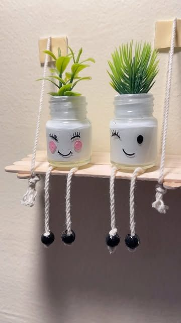
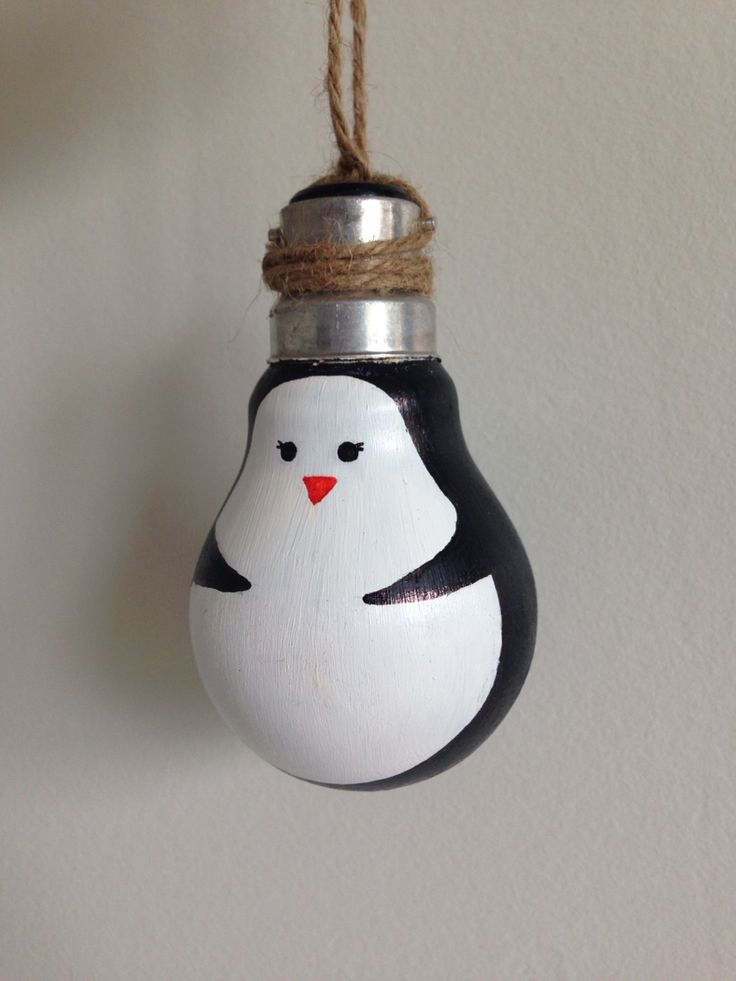
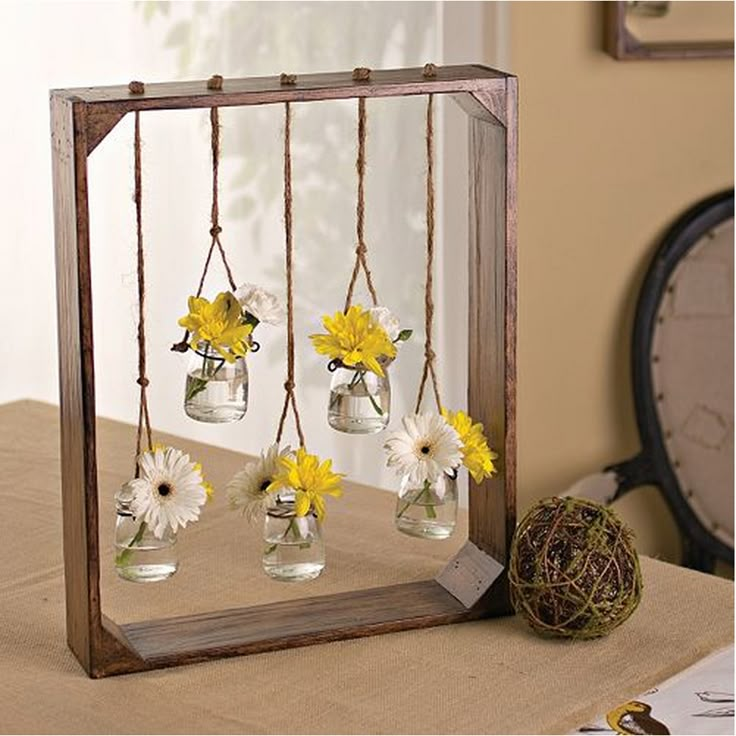

Waste materials can be reused to create beautiful and useful craft items. Things made out of waste help reduce pollution and encourage eco-friendly habits. This page shows simple craft ideas made using everyday waste materials available at home.
  | Waste Material | Craft Item |
|---|---|
| Plastic Bottle | Flower Vase |
| Newspaper | Basket |
| Old CD | Wall Decoration |